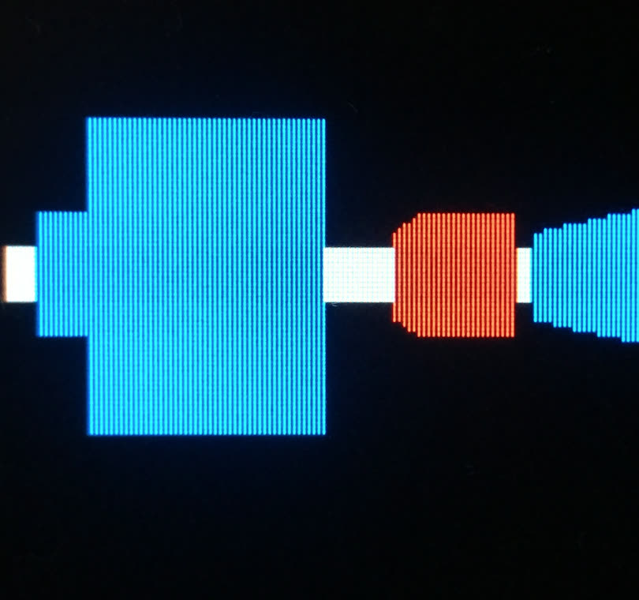
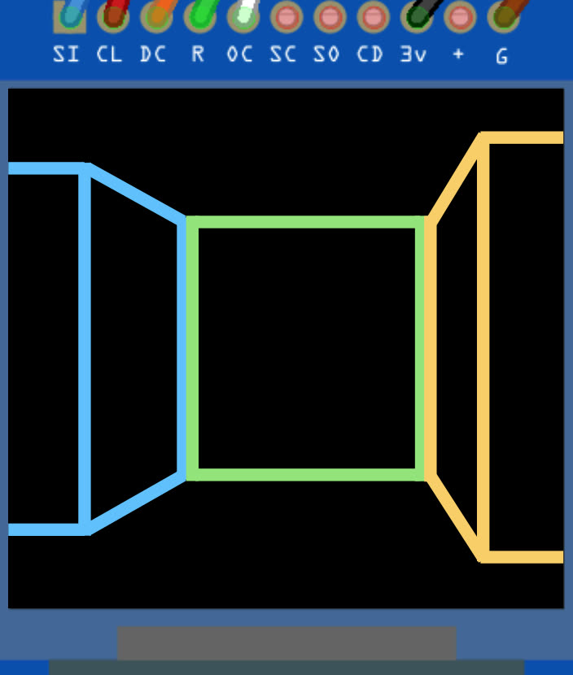
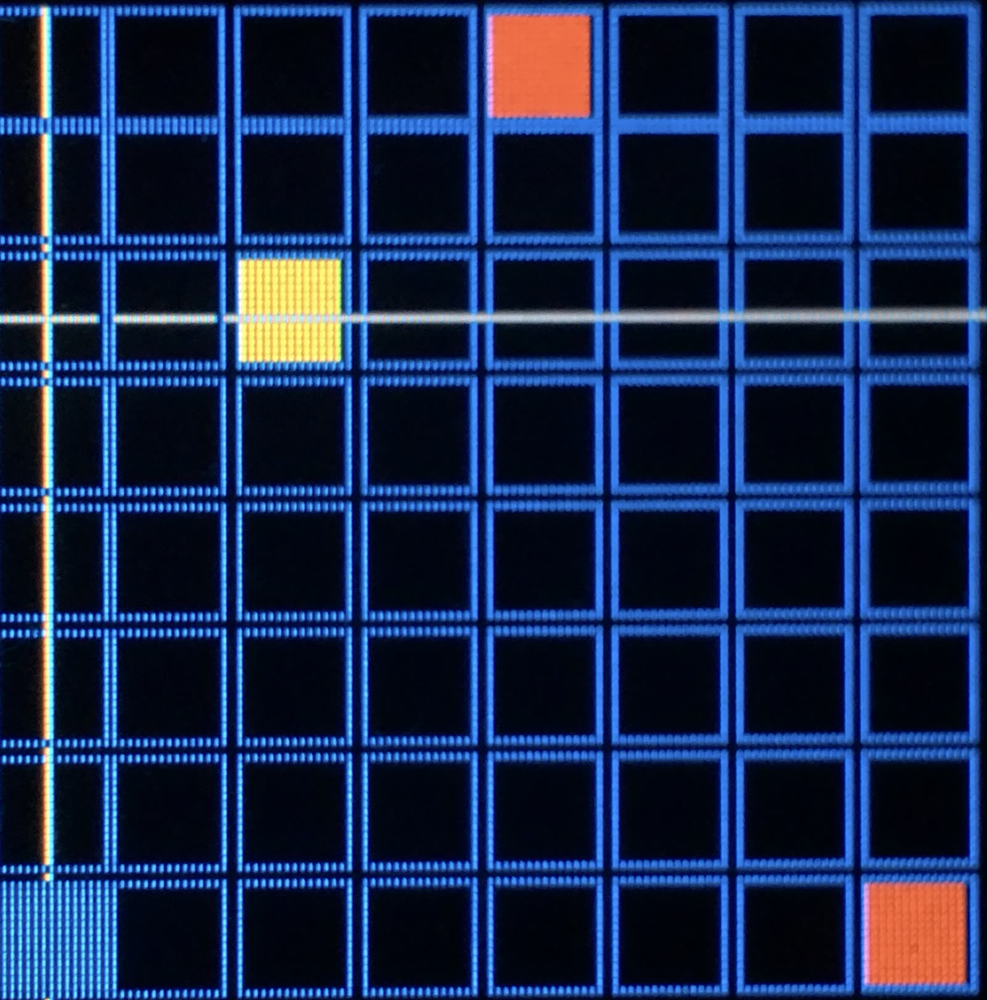
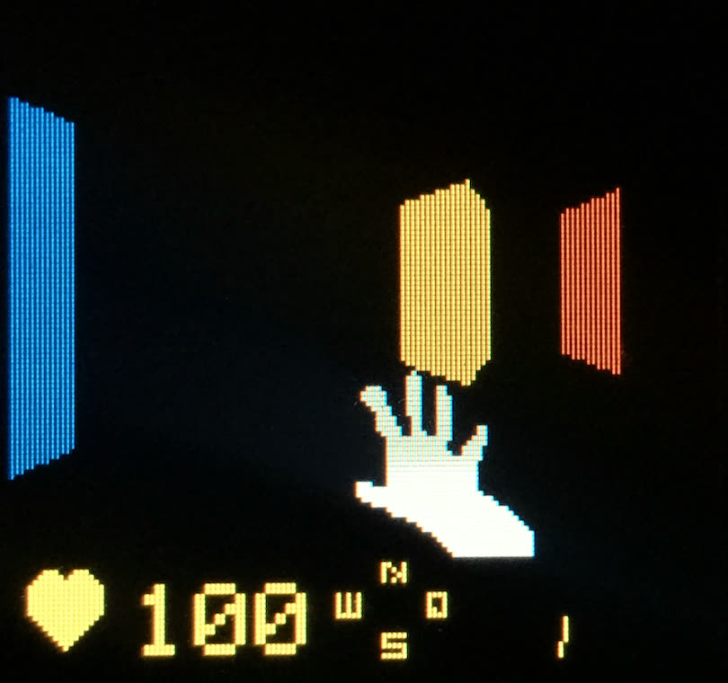

Own build · 2021
Ghost Engine Classic 2D
A pseudo-3D rendering engine for a 128 × 128 RGB OLED, combining two early-90s techniques: raycasting from Wolfenstein 3D and binary space partitioning from Doom. The whole pipeline runs on an ATmega2560 — 16 MHz, 8 KB of SRAM.
- MCU
- Arduino Mega 2560 · 16 MHz · 8 KB SRAM
- Display
- SSD1351 RGB OLED · 128 × 128 · hardware SPI
- Language
- C++17 on AVR-GCC
- Techniques
- BSP · Raycasting · Occlusion buffer
- Origin
- Bachelor thesis

Originally my bachelor thesis on an Arduino Uno. The code now targets a Mega 2560 for headroom, but the algorithms are unchanged.
The constraint that shapes everything
8 KB of SRAM does not hold a framebuffer. A 128 × 128 screen at 16 bits per pixel would need 32 KB — four times the entire memory of the chip. So there is no back buffer to compose into and blit; every pixel that changes has to be pushed over SPI as it is decided, and the SPI bus is the slowest thing in the loop.
That single fact explains every design decision below: the front-to-back traversal exists so no pixel is ever written twice, and the delta redraw exists so unchanged pixels are not written at all.
Map gen (once) Per frame
-------------- -------------------------------------------
BSP subdivide --> FOV update -> RenderBSP (front-to-back)
|
v
DrawWall -> DrawSegment
|
v
FillSegment
|
v
per-column SPI write
1. Building the map with BSP
The world starts as one square. It is split iteration times, alternating
vertical and horizontal cuts, with a ratio constraint that prevents skinny sectors. The
leaves of the resulting binary tree are the playable rooms.
iter 0 iter 1 iter 2 +--------+ +----+----+ +---+--+----+ | | | | | | | | | | | -> | | | -> +---+--+----+ | | | | | | | | | | | | | | +-+--+ +--------+ +----+----+ +-----+-+--+
Six iterations give 64 leaves. Each leaf is a 13-byte Container
whose derived geometry — centre, edges — comes from constexpr member functions
rather than stored fields, so it is recomputed on demand at zero storage cost. A tree node
totals 17 bytes. Sectors are then randomly flagged as walls, with the spawn sector forced
empty so every wall sits in front of the player at start.
2. Front-to-back traversal
This is the Doom trick. The tree is walked once, picking the player's side of the split first at every inner node. Combined with the per-column occlusion buffer in step 4, the engine never z-sorts and never overdraws.
BSP tree Map (top-down)
* +-----+-----+
/ \ | | |
/ \ | L | R |
L R | | |
/ \ / \ +--*--+-----+
a b c d player
Player is on the left side of the root split, so:
RenderBSP(L) -- drawn first into xBuffer
RenderBSP(R) -- drawn second, but already occluded
Recursing into L picks the nearer of {a, b} first by the same rule.
The split axis at each inner node is recovered from the children's geometry: same X column means a horizontal split, same Y row means a vertical one. No split plane needs to be stored per node — precious bytes saved.
3. Projection and FOV clipping
Each visible wall face arrives as two world-space endpoints. They go through a camera transform and a three-plane clip before anything is drawn.
wall in world : A *-------------* B
^ forward
in camera space: |
outside left / | inside
/ |
A *--------/-----* B
A'
A is outside the left FOV plane.
Linearly interpolate A onto the plane -> A'.
A' has the correct depth at the FOV boundary,
so the wall does not "stretch into the middle".
| Plane | Inside half-space |
|---|---|
| Near plane | depth >= NEAR_PLANE_DEPTH |
| Right FOV | lateral <= depth · tan(FOV/2) |
| Left FOV | lateral >= −depth · tan(FOV/2) |
After the clip both endpoints sit inside the visible cone, so the projection is a clean
perspective divide: screen_x = w/2 + (lateral / depth) / tan(FOV/2) · (w/2).
Why clip against all three planes and not just the near plane? With a
near-plane clip alone, a wall edge running past the side of the FOV gets yanked forward to
depth = 1. Its line height then blows up to full screen at the edge no matter
how far away the wall actually is — the classic "wall in your face" artifact when walking
parallel to a wall.
4. Per-column drawing and the delta redraw
Three flat 128-element arrays carry the frame, one entry per screen column:
| Buffer | Type | Meaning |
|---|---|---|
xBuffer[x] | bool | Column already drawn this frame? |
yBuffer[x] | int | Line height drawn last frame |
colorBuffer[x] | uint16_t | RGB565 colour drawn last frame |
xBuffer is the occlusion list that makes front-to-back rendering pay off:
one screen column over time:
wall A (closer) wall B (farther)
--------------- ----------------
FillSegment runs FillSegment runs
xBuffer[x] is false -> xBuffer[x] is true
paints column skip column
sets xBuffer[x] = true (already painted by A)
yBuffer and colorBuffer then enable the delta redraw. Columns whose
height and colour match the previous frame send zero pixels. Only the differing
strips at the top and bottom of a shrinking wall — or a single full-column repaint on a
colour change — ever reach the bus.
Line height is perspective-correct: line_height = WALL_PROJ_SCALE / depth.
Across a wall it is 1/depth, not depth itself, that is interpolated
linearly between the endpoints — the same correction the PlayStation 1 famously skipped,
which is why its textures wobble.
5. HUD overlays
Two cosmetic overlays are drawn on top of the world each frame, after the column cleanup
pass. Each is gated by an #if on its toggle in BSP_Settings.h, so
turning one off removes both the data and the call sites at compile time — zero runtime cost
when disabled.
- FPS counter — small white digits top-left, refreshed twice a second, always repainted so a wall sliding into the corner cannot half-eat the digits.
- Minimap — a 32 × 32 top-down view of the BSP map top-right: walls in their real colour, a white dot for the player, a yellow line for the view direction.
The game on top
Boot opens a two-entry menu. PLAY generates a BSP world with randomly coloured walls and drops you into a corner with the map boundary at your back — no enemies, no goal, just walk around and watch the renderer hold up. RAYCAST opens the Lode-style raycaster path instead, with its own grid map editor: place walls in a 24 × 24 grid, then step into first-person view.
Hardware buttons and the serial monitor work in parallel. Holding a button gives continuous motion; each serial keystroke is a single discrete step, which makes debugging a specific frame far easier than trying to hold still with your thumb.



